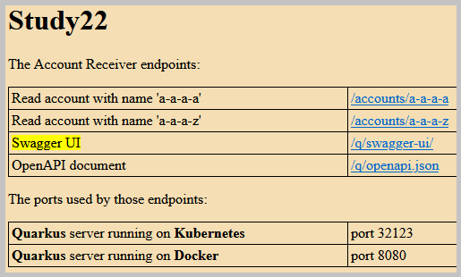

Topics: Kubernetes ● Docker ● Quarkus ● Kafka ● MongoDB ● PostgreSQL
The Account Receiver is implemented as a Quarkus application with Kafka consumer and JSON REST service.
A big list of Kafka records is quickly consumed and stored in the MongoDB document database.
 The data caching strategy is implemented in the Account Receiver.
The data caching strategy is implemented in the Account Receiver.
The sections of this project:
Java source code. Packages in modules 'account-receiver', 'account-sender':

 module 'account-receiver', application sources :
kp
module 'account-receiver', application sources :
kp
module 'account-receiver', test sources :
kp
module 'account-sender', application sources :
kp.sender

 Java API Documentation ●
Java Test API Documentation
Java API Documentation ●
Java Test API Documentation
Action:

 1. With batch file
"01 Docker run Kafka MongoDB PostgreSQL.bat" create and run
1. With batch file
"01 Docker run Kafka MongoDB PostgreSQL.bat" create and run
 Docker containers 'kp-kafka', 'kp-mongodb', 'kp-postgresql'.
Docker containers 'kp-kafka', 'kp-mongodb', 'kp-postgresql'.
2. With batch file
"02 Docker build sender and start.bat" build the Docker image
 for the Account Sender application and
start the Docker container 'study22-acc-sender'.
for the Account Sender application and
start the Docker container 'study22-acc-sender'.
3. With batch file
"03 Docker build receiver and start Quarkus.bat" build the Docker image
 for the Account Receiver application and
start the Docker container 'study22-acc-receiver'.
for the Account Receiver application and
start the Docker container 'study22-acc-receiver'.
 It compiles the Account Receiver application
to a native executable and packages this in a container.
It compiles the Account Receiver application
to a native executable and packages this in a container.
4. With batch file
"04 Kubernetes build.bat" create a kind cluster, install Kafka, MongoDB, and PostgreSQL, and
 load Docker images
for the applications: Account Sender and Account Receiver.
load Docker images
for the applications: Account Sender and Account Receiver.
5. With batch file
"05 show Kubernetes logs.bat" show a Kubernetes logs tail for
 Kafka, MongoDB, PostgreSQL, Account Sender, and Account Receiver.
Kafka, MongoDB, PostgreSQL, Account Sender, and Account Receiver.
 1.1. The Docker configuration files are in the directory
docker-config.
1.1. The Docker configuration files are in the directory
docker-config.
1.2. The Kubernetes configuration files are in the directory
kubernetes-config.
1.3. The screenshot of the created Docker containers.
1.4. The information about Kubernetes (Helm charts, Docker images, Kubernetes cluster info, namespaces,
services, persistent volumes, deployments, kind-control-plane node, pods) was extracted from the log
of the batch file
"04 Kubernetes build.bat"
and it is here.
2.1. The Docker container 'study22-acc-receiver' with the Account Receiver application could be started
Action:
1. With batch file
"07 start Docker Quarkus.bat"
start the Docker container with the Account Receiver application.
 Before this batch execution, the application should not be running.
Before this batch execution, the application should not be running.
The screenshot of the Kubernetes pod 'study22-acc-receiver' log from the Quarkus application start.
2.2. Receive the accounts from Kafka.
The consumer method
kp.kafka.consumers.AccountConsumer::consume consumes the Kafka records.
The payload with JSON content is deserialized and persisted as an Account entity in the MongoDB database.
The service method for the MongoDB database
kp.services.AccountMongoService::processPayload creates the MongoDB entity from the Kafka record payload.
The screenshot of the Kubernetes pod 'study22-acc-receiver' log from the 26 Kafka records payload processing.
2.3 Read the account, which is absent in PostgreSQL.
The JSON REST service is implemented in class kp.resources.AccountResource.
The endpoint method
kp.resources.AccountResource::readAccount reads the account from the PostgreSQL database.
In this case, the account is absent in the PostgreSQL database.
It causes that in the next step, the account is read from the MongoDB database and added to the PostgreSQL database.
The service method for the MongoDB database
kp.services.AccountMongoService::findAccount finds the MongoDB entity by name.
The service method for the PostgreSQL database
kp.services.AccountPostgresService::createAccount creates a new PostgreSQL entity from the existing MongoDB entity.
The screenshot of the Kubernetes pod 'study22-acc-receiver' log from two accounts reading.
2.4. Read the account, which is present in PostgreSQL.
2.5. The Account Receiver frontend.
The web resources for Quarkus were placed in the directory 'src/main/resources/META-INF/resources'.
The home page URL:

The screenshot of the home page fragment.
Reading the account with the given name.

The JSON result in the Firefox Browser from the endpoint path '/accounts/a-a-a-a'.
The screenshot of the Swagger UI page.
The screenshot of the OpenAPI document page.
Back to the top of the page
3.1 The Account Sender application runs the Kafka producer in an endless loop.
The Account Sender generates accounts and feeds them to the Kafka broker.
The producer method: kp.sender.kafka.producers.AccountProducer::produceRecords produces Kafka records.
The screenshot of the Kubernetes pod 'study22-acc-sender' log.
Back to the top of the pageAction:
1. With batch file
"06 CURL call Quarkus.bat"
call the endpoints on the Quarkus server using the command-line tool curl.
4.1. This batch calls the 'read account' endpoint and optionally the 'delete accounts' endpoint.
The endpoint 'delete accounts' deletes all data from all databases.
As a result of that action, the Account Receiver will start anew consuming and processing the Kafka records.
The result from the 'delete accounts' endpoint.
| Quarkus | The Java framework tailored for deployment on Kubernetes |
| Panache | The Quarkus-specific library for the development of the Hibernate-based persistence layer (similar to Spring Data JPA) |
| SmallRye OpenAPI | The extension compliant with the OpenAPI v3 specification |
| Docker CLI | The Docker command-line interface |
| Kubernetes | The container-orchestration system for automating container deployment, scaling, and management |
| kubectl | The command line tool for communicating with a Kubernetes cluster's control plane |
| kind | The tool for running the local Kubernetes cluster in a Docker container ('Kubernetes in Docker') |
| Helm | Helm is the package manager for Kubernetes. Helm glossary |
| Bitnami Images | The Bitnami Containers Library is used as a source of Kubernetes images |
{kind=link}
{kind=link}
{kind=link}
{kind=link}
{kind=link}
{kind=link}
{kind=link}